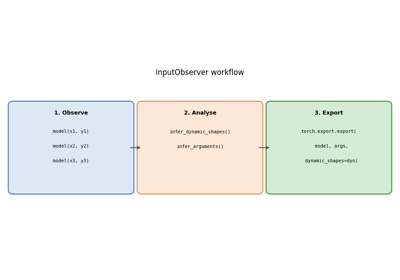

Note
Go to the end to download the full example code.
Applying patches to a model and displaying the diff¶
Before exporting a PyTorch model with torch.export.export(), a set of
patches must be applied to work around limitations in the PyTorch exporter.
This example shows how to:
Apply those patches with
apply_patches_for_model.Inspect the registered
PatchDetailsobject that is yielded by the context manager.Display a unified diff for each
PatchInfoso you can see exactly what changed in the original PyTorch internals.Show which patches were actually exercised when exporting a real model (arnir0/Tiny-LLM).
The context manager both applies the patches on entry and removes them
on exit, so the original functions are restored once the with block ends.
import torch
from yobx.helpers.patch_helper import PatchDetails
from yobx.torch import apply_patches_for_model, register_flattening_functions, use_dyn_not_str
from yobx.torch.tiny_models import get_tiny_model
1. Apply patches and inspect PatchDetails¶
apply_patches_for_model() accepts two boolean flags:
patch_torch=True— patches several internal PyTorch functions that prevent successful dynamic-shape export.patch_transformers=True— adds extra patches for 🤗 Transformers models.
The context manager yields a PatchDetails instance that lists every
PatchInfo that was applied.
with apply_patches_for_model(patch_torch=True) as details:
assert isinstance(details, PatchDetails)
print(f"Number of patches applied: {details.n_patches}")
for patch in details:
print(f" [{patch.family}] {patch.name}")
Number of patches applied: 5
[torch] _print_Symbol
[torch] patched_infer_size
[torch] patched__broadcast_shapes
[torch] patched__get_range_constraints
[torch] patched__maybe_broadcast
2. Display the diff for each patch¶
After the with block the patches have been removed, but
PatchInfo.format_diff() still works because the original function
reference is retained internally.
Each diff is a standard unified diff — lines starting with - were
in the original function; lines starting with + are in the patched
version.
for patch in details:
print(patch.format_diff(format="raw"))
print()
torch: DynamicDimConstraintPrinter._print_Symbol -> patched_DynamicDimConstraintPrinter._print_Symbol
--- original
+++ rewritten
@@ -1,6 +1,5 @@
def _print_Symbol(self, expr: sympy.Symbol) -> str:
- if not isinstance(expr, sympy.Symbol):
- raise AssertionError(f"Expected sympy.Symbol, got {type(expr)}")
- if not self.symbol_to_source.get(expr):
- raise AssertionError(f"Unknown symbol {expr} created by constraints solver")
- return self.symbol_to_source[expr][0].name
+ assert isinstance(expr, sympy.Symbol), str(type(expr))
+ if self.symbol_to_source.get(expr): # type: ignore
+ return self.symbol_to_source[expr][0].name # type: ignore
+ return str(expr)
torch: infer_size -> patched_infer_size
--- original
+++ rewritten
@@ -1,10 +1,13 @@
-def infer_size(a: Sequence[IntLikeType], b: Sequence[IntLikeType]) -> tuple[IntLikeType, ...]:
- from torch.fx.experimental.symbolic_shapes import guard_or_false
-
+def patched_infer_size(a, b):
+ """
+ Patches ``torch._subclasses.fake_impls.infer_size``.
+ This patch is needed to export
+ :class:`yobx.torch.tiny_models.TinyBroadcastAddModel`.
+ """
dimsA = len(a)
dimsB = len(b)
ndim = max(dimsA, dimsB)
- expandedSizes: list[IntLikeType] = [0] * ndim
+ expandedSizes = [0] * ndim
for i in range(ndim - 1, -1, -1):
offset = ndim - 1 - i
dimA = dimsA - 1 - offset
@@ -23,11 +26,21 @@
# expression of an or statement as-is, without bool()'ing it; if this
# were not the case, we'd need to write this using torch.sym_or() or
# something like that).
- torch._check(
- guard_or_false(sizeA == 1) or guard_or_false(sizeB == 1) or sizeA == sizeB,
- lambda: f"The size of tensor a ({sizeA}) "
- f"must match the size of tensor b ({sizeB}) "
- f"at non-singleton dimension {i})",
- )
- expandedSizes[i] = sizeB if guard_or_false(sizeA == 1) else sizeA
+ try:
+ b1 = fx_symbolic_shapes.guard_or_false(sizeA == 1)
+ except fx_symbolic_shapes.GuardOnDataDependentSymNode:
+ b1 = False
+ try:
+ b2 = fx_symbolic_shapes.guard_or_false(sizeB == 1)
+ except fx_symbolic_shapes.GuardOnDataDependentSymNode:
+ b2 = False
+ try:
+ b3 = fx_symbolic_shapes.guard_or_false(sizeA == sizeB)
+ except fx_symbolic_shapes.GuardOnDataDependentSymNode:
+ b3 = False
+ if b1 or b2 or b3:
+ expandedSizes[i] = sizeB if fx_symbolic_shapes.guard_or_false(sizeA == 1) else sizeA
+ else:
+ # PATCHED: generic case, the dimension is known, no need to assert
+ expandedSizes[i] = torch.sym_max(sizeA, sizeB) # type: ignore
return tuple(expandedSizes)
torch: _broadcast_shapes -> patched__broadcast_shapes
--- original
+++ rewritten
@@ -1,12 +1,11 @@
-def _broadcast_shapes(*_shapes):
- from torch.fx.experimental.symbolic_shapes import (
- guard_or_false,
- has_hint,
- is_nested_int,
- size_hint,
- )
-
- backed_so = torch.fx.experimental._config.backed_size_oblivious
+def patched__broadcast_shapes(*_shapes):
+ """
+ Patches ``torch._refs._broadcast_shapes``.
+ This patch is needed to export
+ :class:`yobx.torch.tiny_models.TinyBroadcastAddModel`.
+ """
+ from functools import reduce
+ from torch._prims_common import IntLike
shapes = tuple(
(x,) if isinstance(x, IntLike) else x for x in filter(lambda x: x is not None, _shapes)
@@ -19,59 +18,36 @@
for shape in shapes:
if not isinstance(shape, Sequence):
raise RuntimeError(
- "Input shapes should be of type ints, a tuple of ints, or a list of ints, got ",
+ "Input shapes should be of type ints, a tuple of ints, "
+ "or a list of ints, got ",
shape,
)
# Computes common shape
- common_shape: list[int | torch.SymInt] = [
- 1,
- ] * reduce(max, (len(shape) for shape in shapes))
- for arg_idx, shape in enumerate(shapes):
+ common_shape = [1] * reduce(max, (len(shape) for shape in shapes))
+ for _arg_idx, shape in enumerate(shapes):
for idx in range(-1, -1 - len(shape), -1):
- # NB: handle nested ints specially to avoid invalid guarding on Ne(j0, 1).
- if is_nested_int(shape[idx]):
+ if fx_symbolic_shapes.is_nested_int(shape[idx]):
# Broadcasting is allowed for (j0, 1) or (j0, j0);
# not (j0, j1), (j0, 5), etc.
- if is_nested_int(common_shape[idx]) and guard_or_false(
- shape[idx] == common_shape[idx]
- ):
+ if fx_symbolic_shapes.is_nested_int(
+ common_shape[idx]
+ ) and fx_symbolic_shapes.guard_or_false(shape[idx] == common_shape[idx]):
continue
else:
- # When backed size oblivious is used, we specialize for broadcasting
- # if its the only way to compile the example input.
- # i.e: s0:1, s1:1 ==>
- # assert s0==s1, no specialization on ==1 or !=1.
- # The non-broadcast path is picked
- # s0:1, s1:4 ==>
- # specialize(s0) to be 1.
- # s0:4, s1:1 ==>
- # specialize(s1) to be 1.
- if backed_so and has_hint(shape[idx]) and has_hint(common_shape[idx]):
- a = size_hint(shape[idx])
- b = size_hint(common_shape[idx])
- if a == 1 and b != 1:
- torch._check(shape[idx] == 1)
- if b == 1 and a != 1:
- torch._check(common_shape[idx] == 1)
- if guard_or_false(shape[idx] == common_shape[idx]):
+ if fx_symbolic_shapes.guard_or_false(shape[idx] == common_shape[idx]):
continue
-
- if guard_or_false(common_shape[idx] == 1):
+ # PATCHED: two cases, if == for sure, no broadcast,
+ # otherwise maybe broadcast with max(dimensions)
+ if fx_symbolic_shapes.guard_or_false(common_shape[idx] != 1):
+ pass
+ elif fx_symbolic_shapes.guard_or_false(
+ common_shape[idx] == 1
+ ) or fx_symbolic_shapes.guard_or_false(shape[idx] != 1):
if shape[idx] < 0:
raise ValueError("Attempting to broadcast a dimension with negative length!")
- common_shape[idx] = shape[idx]
-
- if not is_nested_int(shape[idx]) and guard_or_false(shape[idx] == 1):
- # broadcast case .
- continue
+ common_shape[idx] = shape[idx] # type: ignore
else:
- # If broadcasting is undecided we pick non-broadcast path and add runtime assertion.
- torch._check(
- common_shape[idx] == shape[idx],
- lambda: f"Attempting to broadcast a dimension of length {shape[idx]} at {idx}! "
- f"Mismatching argument at index {arg_idx} had {shape}; but expected shape "
- f"should be broadcastable to {common_shape}",
- )
+ common_shape[idx] = torch.sym_max(common_shape[idx], shape[idx]) # type: ignore
return common_shape
torch: _get_range_constraints -> patched__get_range_constraints
--- original
+++ rewritten
@@ -1,42 +1,36 @@
-def _get_range_constraints(
+def patched__get_range_constraints(
mod: torch.nn.Module,
- export_artifact: ExportArtifact,
+ export_artifact: torch.export._trace.ExportArtifact,
args,
kwargs,
dynamic_shapes,
):
+ """
+ Patches ``torch.export._trace._get_range_constraints``.
+ See PR `#174593 <https://github.com/pytorch/pytorch/pull/174593>`_.
+ """
gm: torch.fx.GraphModule = export_artifact.aten.gm
- export_graph_signature: ExportGraphSignature = export_artifact.aten.sig
+ export_graph_signature: torch.export.graph_signature.ExportGraphSignature = (
+ export_artifact.aten.sig
+ )
fake_mode: FakeTensorMode = export_artifact.fake_mode
num_lifted = next(
(
i
for i, s in enumerate(export_graph_signature.input_specs)
- if s.kind == InputKind.USER_INPUT
+ if s.kind == torch.export.graph_signature.InputKind.USER_INPUT
),
len(export_graph_signature.input_specs),
)
- combined_args = _combine_args(mod, args, kwargs)
- # This is because we trace based on the kwargs passed in from user
+ # preserve_order=True:
+ # this is because we trace based on the kwargs passed in from user
# not based on the signature. I feel it would be better to just enforce
# one ordering at the start of tracing to avoid confusions, but that is
# bigger refactor, so do this to unblock for now.
- combined_args_traced_order = {}
- for arg in combined_args:
- if arg not in kwargs:
- combined_args_traced_order[arg] = combined_args[arg]
+ combined_args = _combine_args(mod, args, kwargs, preserve_order=True)
- for key in kwargs:
- combined_args_traced_order[key] = kwargs[key]
-
- combined_args = combined_args_traced_order
-
- range_constraints = make_constraints(
- fake_mode,
- gm,
- combined_args,
- dynamic_shapes,
- num_lifted,
+ range_constraints = torch._export.non_strict_utils.make_constraints(
+ fake_mode, gm, combined_args, dynamic_shapes, num_lifted
)
return range_constraints
torch: _maybe_broadcast -> patched__maybe_broadcast
--- original
+++ rewritten
@@ -1,6 +1,13 @@
-def _maybe_broadcast(*args, preserve_cpu_scalar_tensors=True):
+def patched__maybe_broadcast(*args, preserve_cpu_scalar_tensors=True):
+ """
+ Patches ``torch._refs._maybe_broadcast``.
+ This patch is needed to export
+ :class:`yobx.torch.tiny_models.TinyBroadcastAddModel`.
+ """
+ from torch._prims_common import ShapeType, TensorLike, Number
+
# Computes common shape
- common_shape = _broadcast_shapes(
+ common_shape = patched__broadcast_shapes(
*(t.shape if isinstance(t, TensorLike) else None for t in args)
)
@@ -29,10 +36,15 @@
return True
# u0==u1 assume the same, no broadcasting!
- torch._check(
- x == y,
- lambda: "sizes assumed to be the same due to unbacked broadcasting semantics",
- )
+ # PATCHED: avoid errors
+ return True # guard_or_true(x != y)
+ # torch._check(
+ # x == y,
+ # lambda x=x, y=y: (
+ # f"sizes assumed to be the same due to unbacked "
+ # f"broadcasting semantics x={x!r}, y={y!r}"
+ # ),
+ # )
return False
@@ -42,14 +54,14 @@
elif isinstance(x, Number):
return x
elif isinstance(x, TensorLike):
- if preserve_cpu_scalar_tensors and utils.is_cpu_scalar_tensor(x):
+ if preserve_cpu_scalar_tensors and torch._prims_common.is_cpu_scalar_tensor(x): # type: ignore
return x
- if should_expand(x.shape, common_shape):
- return x.expand(common_shape)
+ if should_expand(x.shape, common_shape): # type: ignore
+ return x.expand(common_shape) # type: ignore
return x
else:
- raise RuntimeError("Unexpected type when broadcasting: " + str(type(x)) + "!")
+ raise RuntimeError(f"Unexpected type when broadcasting: {str(type(x))}!")
return tuple(__maybe_broadcast(x, common_shape) for x in args)
3. Show which patches apply when exporting arnir0/Tiny-LLM¶
When exporting a real transformers model we can find out exactly which
patched functions were exercised by calling
PatchDetails.patches_involved_in_graph() after
torch.export.export().
register_flattening_functions() must also be active so that the
DynamicCache pytree structure is understood by the
exporter.
data = get_tiny_model("arnir0/Tiny-LLM")
model, inputs, ds = data.model, data.export_inputs, data.dynamic_shapes
with (
register_flattening_functions(patch_transformers=True),
apply_patches_for_model(patch_torch=True, patch_transformers=True, model=model) as details2,
):
ep = torch.export.export(model, (), kwargs=inputs, dynamic_shapes=use_dyn_not_str(ds))
patches = details2.patches_involved_in_graph(ep.graph)
print(f"\nPatches involved in the exported graph: {len(patches)}")
print(details2.make_report(patches))
use_kernel_func_from_hub is not available in the installed kernels version. Please upgrade kernels to use this feature.
Patches involved in the exported graph: 1
transformers: LlamaRotaryEmbedding.forward -> common_RotaryEmbedding.forward
--- original
+++ rewritten
@@ -1,18 +1,26 @@
-@torch.no_grad()
-@dynamic_rope_update # power user: used with advanced RoPE types (e.g. dynamic rope)
-def forward(self, x, position_ids):
+@patched_dynamic_rope_update
+def forward(self, x, position_ids, layer_type=None):
+ if layer_type is not None:
+ # transformers>=5.0
+ inv_freq = getattr(self, f"{layer_type}_inv_freq")
+ attention_scaling = getattr(self, f"{layer_type}_attention_scaling")
+ else:
+ # transformers<5.0
+ inv_freq = self.inv_freq
+ attention_scaling = self.attention_scaling
+
inv_freq_expanded = (
- self.inv_freq[None, :, None].float().expand(position_ids.shape[0], -1, 1).to(x.device)
+ inv_freq[None, :, None].float().expand(position_ids.shape[0], -1, 1).to(x.device)
)
position_ids_expanded = position_ids[:, None, :].float()
device_type = (
x.device.type if isinstance(x.device.type, str) and x.device.type != "mps" else "cpu"
)
- with maybe_autocast(device_type=device_type, enabled=False): # Force float32
+ with torch.autocast(device_type=device_type, enabled=False): # Force float32
freqs = (inv_freq_expanded.float() @ position_ids_expanded.float()).transpose(1, 2)
emb = torch.cat((freqs, freqs), dim=-1)
- cos = emb.cos() * self.attention_scaling
- sin = emb.sin() * self.attention_scaling
+ cos = emb.cos() * attention_scaling
+ sin = emb.sin() * attention_scaling
return cos.to(dtype=x.dtype), sin.to(dtype=x.dtype)
--- original
+++ rewritten
@@ -1,103 +1,193 @@
-def dynamic_rope_update(rope_forward):
- """
- Decorator function to update the RoPE parameters in the forward pass, if the model is using a dynamic RoPE
- (i.e. a RoPE implementation that may recompute its frequencies in the forward pass).
+def patched_dynamic_rope_update(rope_forward):
+ """manual patch: ``[patch:transformers.modeling_rope_utils.dynamic_rope_update]``
- Args:
- rope_forward (Callable):
- The forward pass of the RoPE implementation.
+ ``rope_type`` is determined in the constructor of class
+ :class:`transformers.models.phi3.modeling_phi3.Phi3RotaryEmbedding`.
- Returns:
- The decorated forward pass.
+ .. code-block:: python
+
+ if hasattr(config, "rope_scaling") and config.rope_scaling is not None:
+ self.rope_type = config.rope_scaling.get(
+ "rope_type", config.rope_scaling.get("type"))
+ else:
+ self.rope_type = "default"
+
+ The original code of the patched function:
+
+ .. code-block:: python
+
+ def dynamic_rope_update(rope_forward):
+ def longrope_frequency_update(self, position_ids, device):
+ seq_len = torch.max(position_ids) + 1
+ if hasattr(self.config, "original_max_position_embeddings"):
+ original_max_position_embeddings =
+ self.config.original_max_position_embeddings
+ else:
+ original_max_position_embeddings =
+ self.config.max_position_embeddings
+ if seq_len > original_max_position_embeddings:
+ if not hasattr(self, "long_inv_freq"):
+ self.long_inv_freq, _ = self.rope_init_fn(
+ self.config, device, seq_len=original_max_position_embeddings + 1
+ )
+ self.register_buffer("inv_freq", self.long_inv_freq, persistent=False)
+ else:
+ self.original_inv_freq = self.original_inv_freq.to(device)
+ self.register_buffer("inv_freq", self.original_inv_freq, persistent=False)
+
+ def dynamic_frequency_update(self, position_ids, device):
+ seq_len = torch.max(position_ids) + 1
+ if seq_len > self.max_seq_len_cached: # growth
+ inv_freq, self.attention_scaling = self.rope_init_fn(
+ self.config, device, seq_len=seq_len)
+ self.register_buffer("inv_freq", inv_freq, persistent=False)
+ self.max_seq_len_cached = seq_len
+
+ if seq_len < self.original_max_seq_len and
+ self.max_seq_len_cached > self.original_max_seq_len:
+ self.original_inv_freq = self.original_inv_freq.to(device)
+ self.register_buffer("inv_freq", self.original_inv_freq, persistent=False)
+ self.max_seq_len_cached = self.original_max_seq_len
+
+ @wraps(rope_forward)
+ def wrapper(self, x, position_ids):
+ if "dynamic" in self.rope_type:
+ dynamic_frequency_update(self, position_ids, device=x.device)
+ elif self.rope_type == "longrope":
+ longrope_frequency_update(self, position_ids, device=x.device)
+ return rope_forward(self, x, position_ids)
+
+ return wrapper
+
"""
def longrope_frequency_update(self, position_ids, device, layer_type=None):
- """Longrope uses long factor if sequence is larger than original pretraining length, short otherwise."""
+ # It is no use to patch the function after the model is created
+ # as rope_init_fn is an attribute set to one function when the model
+ # is created and when no patch is applied yet.
+ # So we select the patched version here.
+ rope_init_fn = _get_rope_init_fn(self, layer_type=layer_type)
seq_len = torch.max(position_ids) + 1
+ if hasattr(self.config, "original_max_position_embeddings"):
+ original_max_position_embeddings = self.config.original_max_position_embeddings
+ else:
+ original_max_position_embeddings = self.config.max_position_embeddings
if layer_type is None:
- rope_type = self.rope_type
- original_inv_freq = self.original_inv_freq
- prefix = ""
- original_max_position_embeddings = self.config.rope_parameters[
- "original_max_position_embeddings"
- ]
- else:
- rope_type = self.rope_type[layer_type]
- original_inv_freq = getattr(self, f"{layer_type}_original_inv_freq")
- prefix = f"{layer_type}_"
- original_max_position_embeddings = self.config.rope_parameters[layer_type][
- "original_max_position_embeddings"
- ]
-
- if seq_len > original_max_position_embeddings:
- if not hasattr(self, f"{layer_type}_long_inv_freq"):
- rope_init_fn = ROPE_INIT_FUNCTIONS[rope_type]
- long_inv_freq, _ = rope_init_fn(
- self.config,
- device,
- seq_len=original_max_position_embeddings + 1,
- layer_type=layer_type,
- )
- self.register_buffer(f"{prefix}inv_freq", long_inv_freq, persistent=False)
- setattr(self, f"{prefix}long_inv_freq", long_inv_freq)
- else:
- # This .to() is needed if the model has been moved to a device after being initialized (because
- # the buffer is automatically moved, but not the original copy)
- original_inv_freq = original_inv_freq.to(device)
- self.register_buffer(f"{prefix}inv_freq", original_inv_freq, persistent=False)
- setattr(self, f"{prefix}original_inv_freq", original_inv_freq)
-
- def dynamic_frequency_update(self, position_ids, device, layer_type=None):
- """
- dynamic RoPE layers should recompute `inv_freq` in the following situations:
- 1 - growing beyond the cached sequence length (allow scaling)
- 2 - the current sequence length is in the original scale (avoid losing precision with small sequences)
- """
- seq_len = torch.max(position_ids) + 1
- if layer_type is None:
- rope_type = self.rope_type
- max_seq_len_cached = self.max_seq_len_cached
+ # rope_type = self.rope_type
original_inv_freq = self.original_inv_freq
prefix = ""
else:
- rope_type = self.rope_type[layer_type]
- max_seq_len_cached = getattr(
- self, f"{layer_type}_max_seq_len_cached", self.max_seq_len_cached
- )
+ # rope_type = self.rope_type[layer_type]
original_inv_freq = getattr(self, f"{layer_type}_original_inv_freq")
prefix = f"{layer_type}_"
- if seq_len > max_seq_len_cached: # growth
- rope_init_fn = ROPE_INIT_FUNCTIONS[rope_type]
- inv_freq, self.attention_scaling = rope_init_fn(
- self.config,
- device,
- seq_len=seq_len,
- layer_type=layer_type,
- )
- # TODO joao: may break with compilation
- self.register_buffer(f"{prefix}inv_freq", inv_freq, persistent=False)
- setattr(self, f"{layer_type}_max_seq_len_cached", seq_len)
+ # At export time, seq_len is unknown.
+ long_inv_freq, _ = rope_init_fn(
+ self.config, device, seq_len=original_max_position_embeddings + 1
+ )
+ original_inv_freq = self.original_inv_freq.to(device)
- if (
- seq_len < self.original_max_seq_len and max_seq_len_cached > self.original_max_seq_len
- ): # reset
- # This .to() is needed if the model has been moved to a device after being initialized (because
- # the buffer is automatically moved, but not the original copy)
- original_inv_freq = original_inv_freq.to(device)
- self.register_buffer(f"{prefix}inv_freq", original_inv_freq, persistent=False)
- setattr(self, f"{prefix}original_inv_freq", original_inv_freq)
- setattr(self, f"{layer_type}_max_seq_len_cached", self.original_max_seq_len)
+ # PATCHED: uses torch.cond instead of a test
+ cond = (seq_len > original_max_position_embeddings).item()
+ inv_freq = torch.cond(
+ cond,
+ (lambda x, y: x.clone()),
+ (lambda x, y: y.clone()),
+ [long_inv_freq.to(original_inv_freq.dtype), original_inv_freq],
+ )
+ setattr(self, f"{prefix}inv_freq", inv_freq)
+ # if seq_len > original_max_position_embeddings:
+ # self.inv_freq = self.long_inv_freq
+ # else:
+ # self.inv_freq = self.original_inv_freq
+
+ def dynamic_frequency_update(self, position_ids, device, layer_type=None):
+ # constructor:
+ # - self.max_seq_len_cached = config.max_position_embeddings
+ # - self.original_max_seq_len = config.max_position_embeddings
+ # - inv_freq, self.attention_scaling = self.rope_init_fn(self.config, device)
+
+ # It is no use to patch the function after the model is created
+ # as rope_init_fn is an attribute set to one function when the model
+ # is created and when no patch is applied yet.
+ # So we select the patched version here.
+ rope_init_fn = _get_rope_init_fn(self, layer_type=layer_type)
+
+ # This behaviour is difficult to translate.
+ # The sequence always grows.
+ # The test should always True.
+ # So: self.max_seq_len_cached = max(self.max_seq_len_cached, seq_len) --> seq_len
+ #
+ # if seq_len > self.max_seq_len_cached: # growth
+ # inv_freq, self.attention_scaling = self.rope_init_fn(
+ # self.config, device, seq_len=seq_len
+ # )
+ # self.register_buffer("inv_freq", inv_freq, persistent=False)
+ # self.max_seq_len_cached = seq_len
+ #
+ # So we should not need what follows.
+ #
+ # cond = (seq_len > self.max_seq_len_cached).item()
+ # self.attention_scaling = torch.cond(
+ # cond,
+ # (lambda x, y: x.clone()),
+ # (lambda x, y: y.clone()),
+ # [attention_scaling, self.attention_scaling],
+ # )
+
+ seq_len = torch.max(position_ids) + 1
+ long_inv_freq, self.attention_scaling = rope_init_fn(self.config, device, seq_len=seq_len)
+
+ if layer_type is None:
+ # rope_type = self.rope_type
+ # max_seq_len_cached = self.max_seq_len_cached
+ original_inv_freq = self.original_inv_freq
+ prefix = ""
+ else:
+ # rope_type = self.rope_type[layer_type]
+ # max_seq_len_cached = getattr(
+ # self, f"{layer_type}_max_seq_len_cached", self.max_seq_len_cached
+ # )
+ original_inv_freq = getattr(self, f"{layer_type}_original_inv_freq")
+ prefix = f"{layer_type}_"
+
+ # Second test to translate.
+ # Let's keep in mind, self.max_seq_len_cached = seq_len is likely to be True.
+ # But in that case the following condition is a way to restore the original cache.
+
+ # if (
+ # seq_len < self.original_max_seq_len
+ # and self.max_seq_len_cached > self.original_max_seq_len
+ # ):
+ # self.original_inv_freq = self.original_inv_freq.to(device)
+ # self.register_buffer("inv_freq", self.original_inv_freq, persistent=False)
+ # self.max_seq_len_cached = self.original_max_seq_len
+
+ original_inv_freq = self.original_inv_freq.to(device)
+ cond = (seq_len >= self.original_max_seq_len).item()
+ # PATCHED: uses torch.cond instead of a test
+ inv_freq = torch.cond(
+ cond,
+ (lambda x, y: x.clone()),
+ (lambda x, y: y.clone()),
+ [long_inv_freq.to(original_inv_freq.dtype), original_inv_freq],
+ )
+ setattr(self, f"{prefix}inv_freq", inv_freq)
@wraps(rope_forward)
def wrapper(self, x, position_ids, layer_type=None):
- rope_type = self.rope_type if layer_type is None else self.rope_type[layer_type]
- kwargs = {"layer_type": layer_type} if layer_type is not None else {}
- if "dynamic" in rope_type:
- dynamic_frequency_update(self, position_ids, device=x.device, **kwargs)
- elif rope_type == "longrope":
- longrope_frequency_update(self, position_ids, device=x.device, **kwargs)
- return rope_forward(self, x, position_ids, **kwargs)
+ if layer_type is None:
+ if "dynamic" in self.rope_type:
+ dynamic_frequency_update(self, position_ids, device=x.device)
+ elif self.rope_type == "longrope":
+ longrope_frequency_update(self, position_ids, device=x.device)
+ return rope_forward(self, x, position_ids)
+
+ if "dynamic" in self.rope_type:
+ dynamic_frequency_update(self, position_ids, device=x.device, layer_type=layer_type)
+ elif self.rope_type == "longrope":
+ longrope_frequency_update(self, position_ids, device=x.device, layer_type=layer_type)
+ return rope_forward(self, x, position_ids, layer_type=layer_type)
return wrapper
aten.unsqueeze.default(b_model_rotary_emb_inv_freq, 0) -> unsqueeze_12
aten.unsqueeze.default(unsqueeze_12, 2) -> unsqueeze_13
aten._assert_tensor_metadata.default(unsqueeze_13) -> _assert_tensor_metadata_default_3
aten.to.dtype(unsqueeze_13, torch.float32) -> to_3
aten.expand.default(to_3, [sym_size_int_18, -1, 1]) -> expand_1
aten._assert_tensor_metadata.default(expand_1) -> _assert_tensor_metadata_default_4
aten.to.dtype_layout(expand_1) -> to_4
aten.slice.Tensor(position_ids, 0, 0, 9223372036854775807) -> slice_4
aten.unsqueeze.default(slice_4, 1) -> unsqueeze_14
aten.slice.Tensor(unsqueeze_14, 2, 0, 9223372036854775807) -> slice_5
aten._assert_tensor_metadata.default(slice_5) -> _assert_tensor_metadata_default_5
aten.to.dtype(slice_5, torch.float32) -> to_5
<built-in function getitem>(wrap_with_autocast, 0) -> mul
<built-in function getitem>(wrap_with_autocast, 1) -> mul_1
aten._assert_tensor_metadata.default(mul) -> _assert_tensor_metadata_default_8
aten.to.dtype(mul, torch.float32) -> to_8
aten._assert_tensor_metadata.default(mul_1) -> _assert_tensor_metadata_default_9
aten.to.dtype(mul_1, torch.float32) -> to_9
Total running time of the script: (0 minutes 6.081 seconds)
Related examples

InputObserver: recording inputs for ONNX export